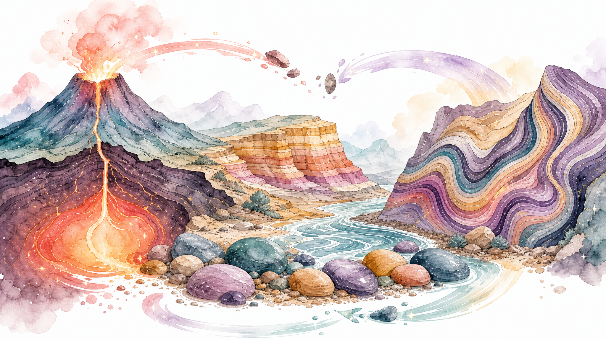

{kind=link}
The rock cycle, but actually pretty
This version explains the rock cycle like a real science guide instead of a sad worksheet. Kids can see how rocks melt, cool, weather, compact, and change under heat and pressure without pretending every rock follows one perfect loop.

See the cycle in motion
This is the clean printable poster view families can use for notebooks, wall display, or quick review before the lesson.

Family note
The big misconception to kill here: the rock cycle is not a tidy circle where every rock visits every stage in order.
- Any rock can weather into sediment.
- Burial can add heat and pressure without melting.
- Melting only happens in some conditions.
- Geologic change can take a very, very long time.
Best use: Print the poster, then ask kids to trace one possible pathway for a single rock.
Meet the rock families
These visuals make it easier to talk about what rocks look like and what clues help kids sort them.

Igneous clues
Look for crystals, bubbles, or a glassy surface. These rocks formed from cooled magma or lava.
Sedimentary clues
Look for layers, grains, or pieces pressed together. These rocks are built from sediments over time.
Metamorphic clues
Look for bands, squiggles, or flattened minerals. These rocks changed because of heat and pressure.
How to teach it fast
Step 1: Start with the three rock families.
Step 2: Ask what could break, bury, squeeze, melt, or cool a rock.
Step 3: Trace one rock’s story instead of forcing the whole chart at once.
What kids usually get wrong
They often think the cycle is one fixed loop or that metamorphic rock means “melted rock.” It doesn’t. Metamorphic rock changes without fully melting.